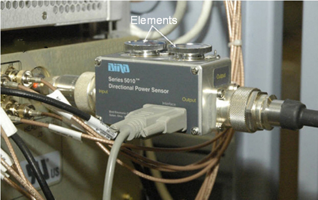
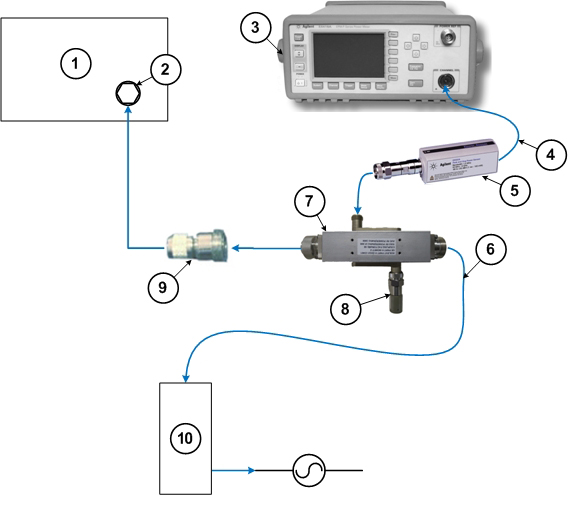

UPM calibration and UPM functional check–head mode
Prerequisites
Table 1. Personnel requirements
Required persons
Preliminary requirements
Procedure
Finalization
1
-
30 mins (plus 30 mins for Agilent wattmeter
power up) minutes
10 minutes
Table 2. Tools and test equipment
Item
Quantity
Effectivity
Part number
Manufacturer
Medium Phillips
screwdriver
1
-
-
-
12 inch crescent
wrench
1
-
-
-
RF power measurement
kit (one of the following options):
1
-
EITHER 5307511-2 or 5307511-3 (Bird wattmeter)
BOTH 5434817 (Agilent wattmeter) and 5434817-20 (dummy load)
-
Table 3. Safety
DANGER
Fatal Electric Shock Hazard!
Dangerous voltages throughout the cabinet.
Prevent fatal electrical shock by disabling the RF Amplifier
before configuring the calibration tools.
Warning
Electrical/RF Burn Hazard!
RF burns can occur if transmit cables are disconnected while
the system is scanning.
Prevent possible RF Burns when disconnecting transmit cables
from the RF Amp by verifying that the system is not manually pre-scanning
or scanning. Verify that the scan desktop icon displays the “idle”
message and the RF enable switch is in the “off” position.
CAUTION
Possible equipment damage!
Coils and phantoms left in the magnet bore during these
procedures can damage equipment.
Remove all phantoms and hardware (such as head coil, surface
coil, etc.) from the magnet bore before initiating these procedures.
CAUTION
Possible equipment damage!
Operating the RF with an improper load can permanently damage
the amplifier.
Do not operate the RF amplifier with an improper load connected
to its output unless otherwise instructed.
CAUTION
Possible equipment damage!
Connecting or disconnecting the wattmeter sensor while the
meter is ON can damage equipment.
Always turn the meter OFF before plugging or unplugging
the sensor.
Table 4. Required conditions
Condition
Reference
Effectivity
When using the Agilent wattmeter, plug in the wattmeter and turn it on. The wattmeter must be powered for at least 30 minutes for stable and accurate readings.
-
-
About this task
Use the following procedures to calibrate the head universal power monitor (UPM) and perform the functional check for the head UPM. These procedures must be done in sequence:
The UPM calibration adjusts digital attenuator values internal to the UPM to match the expected RF signal levels.
The UPM functional check runs a prescribed scan in the forward power. It compares the measured RF power from the UPM to the expected value stored in the UPM configuration file. If two values are outside 12%, the functional check fails. If the measured RF power exceeds the trip limit, the UPM stops scanning.
If you are performing an initial installation and need to calibrate the RF amplifier, calibrate the UPMs, and check the UPMs, use the procedures in Calibrating RF Amplifier and UPM.
Topic ID: id_SL5488889-1182580
Disabling T/R, DD, and RF input for head mode
Procedure
(For Agilent wattmeter) Plug in the wattmeter
and turn it on. The wattmeter must be powered for at least 30 minutes
for stable and accurate readings.
Verify that the system is idle.
DANGER
Fatal Electric shock hazard!
the RF Amplifier is not disabled.
to prevent fatal electric shock, ensure the RF Amplifier
is disabled while configuring the calibration tools.
On the front of the driver module, disable the TR and DD fault
detection in the PEN cabinet. Move switch SW2 to the TR DISABLE position, and move SW3 to the DD Disable position.
Note: Leave the HV switch enabled.
Figure 1. Driver module (front view) switches
On the front of the DTX1 exciter, set the RF ENB to DISABLE (down).
Figure 2. RF ENB switch in disable (down)
The power measurement kit can have either a Bird or Agilent
wattmeter. The setup instructions are different for each.
Using Bird Wattmeter and power adjustment kit for UPM head calibration
Topic ID: id_SL5488895-1182580
Setting up RF coupler for head calibration
Procedure
Use the DVM to measure the resistance of input to the dummy
load. Confirm that the resistance measures 50 ohms +/- 5 ohms.
Note: If the dummy load is out of spec, return the 3.0T RF kit for repair. Do NOT proceed with the RF amp output calibration.
Topic ID: id_SL5488901-1182580
Wattmeter and dummy load setup for head mode
Procedure
DANGER
FATAL ELECTRIC SHOCK HAZARD!
THE RF AMPLIFIER IS NOT DISABLED.
TO PREVENT FATAL ELECTRIC SHOCK, ENSURE THE RF AMPLIFIER
IS DISABLED WHILE CONFIGURING THE CALIBRATION TOOLS.
Warning
ELECTRICAL/RF BURN HAZARD!
RF BURNS Can Occur AS A RESULT OF DISCONNECTING HELIAX CABLES
WHILE THE SYSTEM IS SCANNING.
PREVENT POSSIBLE RF BURNS WHEN DISCONNECTING HELIAX CABLES
FROM THE RF AMPLIFIER BY VERIFYING THAT THE SYSTEM IS NOT MANUALLY
PRESCANNING OR SCANNING. VERIFY THAT THE SCAN DESKTOP ICON DISPLAYS
THE “IDLE” MESSAGE AND THE RF ENABLE SWITCH IS IN THE
“OFF” POSITION.
Verify that the scanner is idle. Confirm that the RF ENB switch
on the DTX1 exciter (in the upper part of the PEN cabinet) is in the
Disable (down) position. See Figure 2.
Connect the input of the coupler to the RF amplifier:
Figure 3. Connection of RF coupler to head output

Warning
Electric shock risk!
pay close attention to the connections to the dummy load.
Failure to connect the dummy load correctly could result in electric
shock.
Connect the RF coupler output to the dummy load.
Figure 4. Complete head output test setup
Connect one end of the wattmeter cable to the wattmeter sensor
output. (RS232 is unused.) Connect the other end to the coupler. Plug
in the wattmeter to use wall power (batteries are often not charged).
Note: Do not apply RF power to the dummy load without its fan in operation. Doing so will result in catastrophic damage to the dummy load due to overheating.
Plug the fan for the dummy load into a service outlet in the
PGR cabinet.
Never use this dummy load without its
fan running.
The power measurement kit can have one of two Bird wattmeters.
The setup instructions are different for each.
Setting up Bird 5000-EX Wattmeter to measure forward head maximum power
About this task
Figure 5. Bird 5000-EX Wattmeter
Procedure
Press the ON button on the wattmeter.
(If the coupler and sensor are not correctly connected to the amplifier,
you will see a No Sensor indication).
Select the arrow button under Scale.
Type 5000 to set the range and then press Enter.
To validate the setting, select the arrow button under Scale.
To exit, press Enter.
Select the arrow button under Fwd Units. Make sure the scale reads W (or kW on some wattmeters). If the scale reads dBm, select the arrow button under Fwd Units again to toggle the scale
to read W (or kW) on the
TOP, forward power scale. Ignore the BOTTOM, reflected power scale
value. It is not used during maximum power calibration.
Select the Shift button.
Select the arrow button under Setup.
Note: This action displays the sensor type configured in the wattmeter. This procedure uses sensor type 43, which is optimized for peak power measurement.
Verify that the wattmeter display reads 43. If not, type 43 and then press Enter.
Figure 6. Wattmeter display set to read sensor type
Press Enter.
Select the arrow button under Type, and
change the unit of measurement to Peak.
Enter the offset to ensure an accurate measurement. Locate the
Element Offset Factors card in the kit.
Figure 7. Example element offset factors card
Press the Offset button on the wattmeter.
Enter the numeric value from the offset card (even if it is zero),
and press Enter.
Note: If entering a negative value, first enter the numerical value, then the minus symbol (–).
Figure 8. Wattmeter set to display peak power and watts
The meter is now configured to read RF peak power, in watts,
for the head maximum output calibration.
Setting up Bird 5000-XT Wattmeter to measure forward head maximum power
About this task
Figure 9. Bird 5000-XT Wattmeter
Procedure
Press the OK button on the wattmeter.
Press MENU. Press ▼ to SCALE
MENU, and then press OK.
Type 5000 to set the range, and then press OK.
Check the setting by pressing ▼ to SCALE MENU, and then press OK.
Press OK to exit. Press ◄ to return to
measurement mode.
Press ▲ to make sure the scale reads W (or uW or kW on some wattmeters). If
the scale reads dBm, press ▲ again to toggle
the scale to read W (or uW or kW) on the TOP, forward power scale. Ignore
the BOTTOM, reflected power scale value. It is not used during maximum
power calibration.
Press MENU.
Press ▼ to select ELEMENT TYPE. Press OK.
Note: This action displays the sensor type configured in the wattmeter. This procedure uses sensor type 43, which is optimized for peak power measurement.
Verify that the wattmeter display reads 43. If not, type 43 and then press OK.
Figure 10. Wattmeter display set to read sensor type
Press OK. Press ◄ to return to measurement
mode.
Press ► button repeatedly to change the unit of measurement
to Forward Peak.
Enter the offset to ensure an accurate measurement. Locate the
Element Offset Factors card in the kit.
Figure 11. Example element offset factors card
Press the MENU button on the wattmeter.
With OFFSET selected, press OK. Enter the numerical
value from the offset card (even if it is zero) and press OK. (The wattmeter rounds the number to three significant
digits.) Press ◄ to return to measurement mode.
Note:
If entering a negative value, first enter the numerical
value, then the minus symbol (–).
Press MENU. Press ▼ until SMOOTHING is selected, and then press OK.
Press ▼ until 4 Samples is displayed, and
then press OK.
To verify that the SMOOTHING has been set, press ▼ until SMOOTHING is selected, and then press OK.
The wattmeter should read 4 Samples. Press OK.
Press ◄ to return to measurement mode.
Figure 12. Wattmeter Set to Display Peak Power and Watts
Using Agilent Wattmeter and power adjustment kit for UPM head calibration
About this task
The Agilent wattmeter must be powered on for at least 30 minutes for stable and accurate readings. Plug in the wattmeter and turn it on at the beginning of this procedure.
Topic ID: id_SL5489865-1182580
Agilent Wattmeter setup
Procedure
CAUTION
Possible equipment damage!
Physical shocks to the sensor and coupler (for instance,
dropping them) can damage them or cause them to go out of calibration.
Take care when handling the coupler and adapter. When connecting
to the sensor, hold the sensor steady and turn the knurled rings on
the connectors to tighten them. Take care not to cross-thread the
sensor connections.
Notice
Make sure the serial numbers for the coupler and power sensor match each other. They are calibrated together, and should not be swapped between power measurement kits.
Set up the wattmeter for calibration as shown in the following
illustration.
Connect the Agilent sensor probe cable to the sensor.
Connect the sensor to the power reference (PWR REF) port on the wattmeter.
Connect the other end of the sensor probe cable to the Channel A port on the wattmeter.
Figure 13. Agilent Wattmeter calibration setup
1
Front of wattmeter
4
Zero/Cal button
2
Power reference (PWR REF) port
5
Channel A port
3
Agilent RF power sensor
6
Agilent sensor probe cable
On the front of the wattmeter, press Zero/Cal.
Press the Zero + Cal softkey to start
the calibration process.
The wattmeter displays a wait screen while it zeros. While the wattmeter calibrates, a green LED next to the power reference port turns on (indicating RF power is being transmitted from the reference port). When this LED turns off, the calibration is complete.
If there is a calibration error, an error message appears on the wattmeter screen. If this happens, check the connections to the meter and sensor and press the Zero + Cal softkey to re-run the calibration.
Note: Expect to see a fluctuating low power reading on the wattmeter on the order of ±3.0 dBm (± 2.0 mW) after it is calibrated.
Topic ID: id_SL5489873-1182580
Wattmeter and dummy load setup for head mode
Procedure
Verify that the scanner is idle. Confirm that the RF ENB switch on the DTX1 exciter (in the upper part
of the PEN cabinet) is in the Disable (down) position. See Figure 2.
Connect the input of the coupler to the RF amplifier:
Connect remaining Agilent power components.
Figure 14. Agilent Wattmeter setup for RF power output for head

1
RF amplifier (front)
6
RF cable to dummy load
2
RF output port
7
RF coupler
3
Wattmeter
8
Agilent 50 ohm terminator connected to the Reflected port on the coupler
4
Agilent sensor probe cable
9
RF adapter
5
RF sensor connected to the Incident port
on the coupler
10
Dummy load with internal fans
Connect one end of the RF sensor to the wattmeter. Connect the
other end to the coupler.
Note: Do not apply RF power to the dummy load without its fan in operation. Doing so will result in catastrophic damage to the dummy load due to overheating.
Plug the fan for the dummy load into a service outlet in the
PGR cabinet. Never use this dummy load without
its fan running.
Topic ID: id_SL5489887-1182580
Setting up Agilent Wattmeter to measure forward head maximum power
Procedure
CAUTION
Possible equipment damage!
Physical shocks to the sensor and coupler (for instance,
dropping them) can damage them or cause them to go out of calibration.
Take care when handling the coupler and adapter.
Notice
Make sure the serial numbers for the coupler and power sensor match each other. They are calibrated together, and should not be swapped between power measurement kits.
(For non-proprietary mode) From the Common
Service Desk (CSD), select Calibration > UPM Tool and select Click here to start this tool.
Make the following selections:
For this setting:
Select:
Nuclei
1H
Task
Calibrate UPM
RF Chain
Head
Power Type
Forward
Select Start.
Select Yes when the prompt asks if the
hardware is set up correctly.
After approximately one minute, you are asked to confirm the
peak power value output from the amplifier.
If the power read from the power meter is within the specification, click Yes. Otherwise, click No and recheck the calibration of the RF amplifier.
The tool reports the steps as they progress. The Status field on the UPM Tool interface displays PASS or FAIL within about three minutes.
Topic ID: id_SL5349140-1182580
Head UPM Functional Check
Procedure
From the UPM Tool interface, make the following selections:
Table 5. Setting for Forward Power
For this setting:
Select:
Nuclei
1H
Task
UPM Func Chk
RF Chain
Head
Power Type
Forward
Select Start.
On the Head Coil Setup OK screen, click Yes when the prompts ask if the hardware is set up correctly.
The tool takes full control and runs the functional test. The
UPM status displays PASS or FAIL within about three minutes.
Prompts appear during test execution, including a pop up message
about the UPM tripping and a power trip error log.
From the CSD, open the error log. Verify that the error log
contains the message that the UPM has “detected a power fault
on Head Short Term Average.” Select [Yes] if an error message
is displayed.
Figure 15. Example of UPM power trip error log
When the test passes, select Quit from
the UPM main window.
Proceed to Finalization.
Topic ID: id_15013387
Finalization
Finalization
Set RF ENB to DISABLE (down).
Power off the wattmeter and dummy load, and remove the cables and measurement equipment.
Reconnect all cables that were removed during the procedure.
To re-enable fault detection, set SW2 to TR ENABLE (up) and SW3 to DD ENABLE (up).